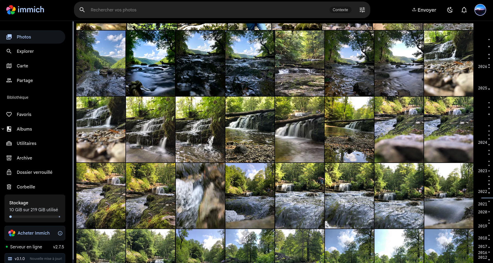
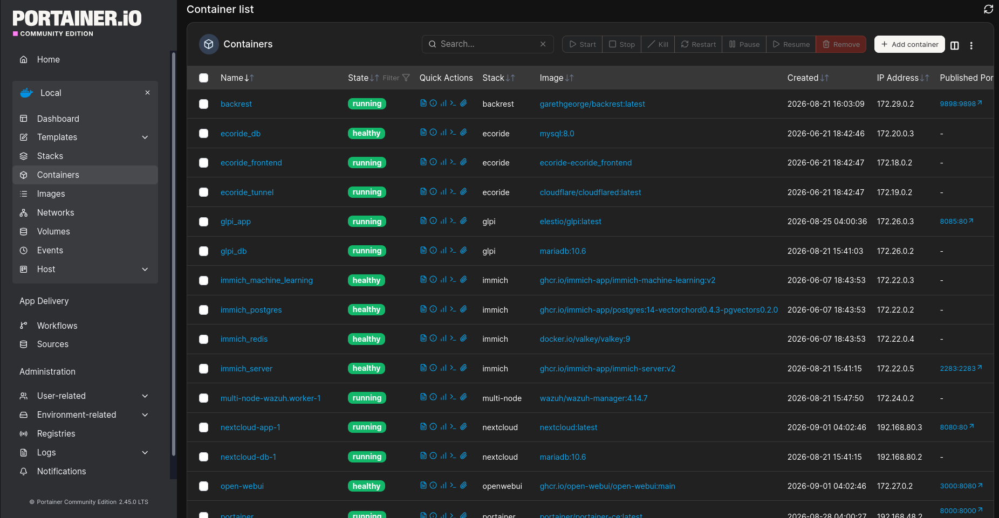
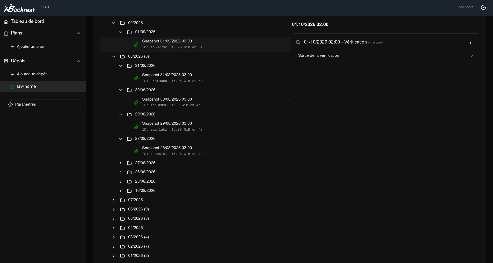

Contexte : Dans une logique de reprendre la main sur mes données et de réduire l’omniprésence de Google dans mon quotidien, j’ai construit ma propre infrastructure auto-hébergée, à domicile, sur du matériel que je contrôle. Photos, fichiers, mots de passe, assistant IA, sauvegardes : tout tourne chez moi et n’est accessible qu’à travers un VPN chiffré, sans exposer le moindre port sur Internet. J’ai poussé le principe jusqu’au mobile en flashent un Pixel 9 avec GrapheneOS.
Ce qui a été réalisé : - Serveur Debian 13
(trixie) auto-hébergé, zéro port ouvert sur
Internet — tout passe par le tailnet - Une quinzaine de
conteneurs Docker en stacks compose organisées dans
/apps/ (Immich, Nextcloud, Vaultwarden, OpenWebUI, SearXNG,
Backrest, Portainer, Watchtower) - Services anti-Google :
Immich (photos), Nextcloud (Drive),
Vaultwarden (mots de passe), SearXNG
(recherche web), OpenWebUI + API DeepSeek (assistant
IA) - Accès distant chiffré (WireGuard) via Tailscale +
MagicDNS, depuis Pixel/PC/n’importe où - Dé-googleïsation
mobile : Pixel 9 → GrapheneOS
Matériel : Dell OptiPlex 3060 (i5-8500, 6 cœurs, 23
Go RAM). 3 disques séparés : système 226 Go, SSD données
/mnt/data (220 Go), SSD backup /mnt/backup
(457 Go).
📦 Des services pour remplacer Google
| Conteneur | Rôle | Accès |
|---|---|---|
| Immich | Photos & vidéos (anti Google Photos) | Tailscale |
| Nextcloud | Fichiers / Drive (anti Google Drive) | Tailscale |
| Vaultwarden | Gestionnaire de mots de passe (interface Bitwarden) | HTTPS |
| OpenWebUI + DeepSeek | Assistant IA avec recherche web (SearXNG) | HTTPS |
| SearXNG | Moteur de recherche auto-hébergé | interne |
| Backrest / restic | Sauvegardes chiffrées et dédupliquées | Tailscale |
| Portainer | Gestion des conteneurs (Stacks) | Tailscale |
| Watchtower | Mise à jour automatique des images (04h00) | interne |

Vue de Immich (web)

Vue de Portainer (stacks Docker)
🗂 Stockage et sauvegardes
- Système :
/dev/sda(226 Go) - Données applicatives (Immich, Nextcloud) :
/dev/sdb→/mnt/data(220 Go) - Sauvegardes :
/dev/sdc→/mnt/backup(457 Go)
Sauvegardes par restic (chiffrées, dédupliquées,
versionnées) orchestrées par Backrest vers le SSD
/mnt/backup. Elles couvrent les données Immich, Nextcloud
et les configurations des conteneurs.
Note d’honnêteté : sauvegarde locale uniquement pour l’instant — pas encore de copie hors-site type B2/S3. Point d’amélioration identifié.

Vue de Backrest (planifications de sauvegarde)
🌐 Réseau : accès distant sans exposition
L’infrastructure n’est accessible que via un VPN mesh Tailscale (WireGuard). Aucun port redirigé sur la box, aucune IP fixe, aucune exposition publique.
- MagicDNS (
CorpDNS) : résolution interne par nom - Reverse proxy HTTPS : un reverse proxy termine le HTTPS avec un certificat Tailscale valide, ce qui permet à Vaultwarden et OpenWebUI d’être servis en HTTPS tout en restant en boucle locale (non exposés au tailnet)
- C’est ce qui rend leur usage possible depuis le téléphone : Bitwarden et les navigateurs rejettent le HTTP non chiffré, d’où le TLS via le proxy
➜ ~ tailscale status
XX.XX.XX.XX srv-home F@ linux active;
XX.XX.XX.XX fedora F@ linux active;
XX.XX.XX.XX Pixel9 F@ android active;
Vue du tailnet (tailscale status)
📱 Dé-googleïsation du mobile : GrapheneOS sur Pixel 9
Le Pixel 9 a été flashé avec GrapheneOS, un Android libre et durci, sans les services Google préinstallés.
- Pas de Google Play Services : moins de télémétrie et de collecte
- Sandboxing renforcé : les services Google éventuels tournent comme de simples applications, sans privilèges système, cloisonnés
- Durcissement système : démarrage vérifié (verified boot), permissions très granulaires, protections mémoire renforcées
- Autonomie : pas de compte Google, fonctionnement indépendant
🛡 Sécurité
| Mesure | État |
|---|---|
| VPN WireGuard mesh, zéro port-forward | ✅ |
| MagicDNS | ✅ |
SSH durci : port non standard,
PasswordAuthentication no |
✅ |
| Reverse proxy HTTPS (certificat MagicDNS) | ✅ |
| Services sensibles en loopback (Vaultwarden, OpenWebUI) | ✅ |